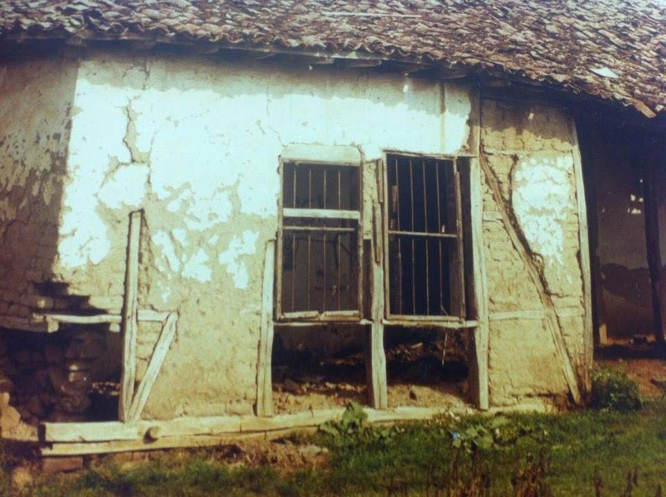
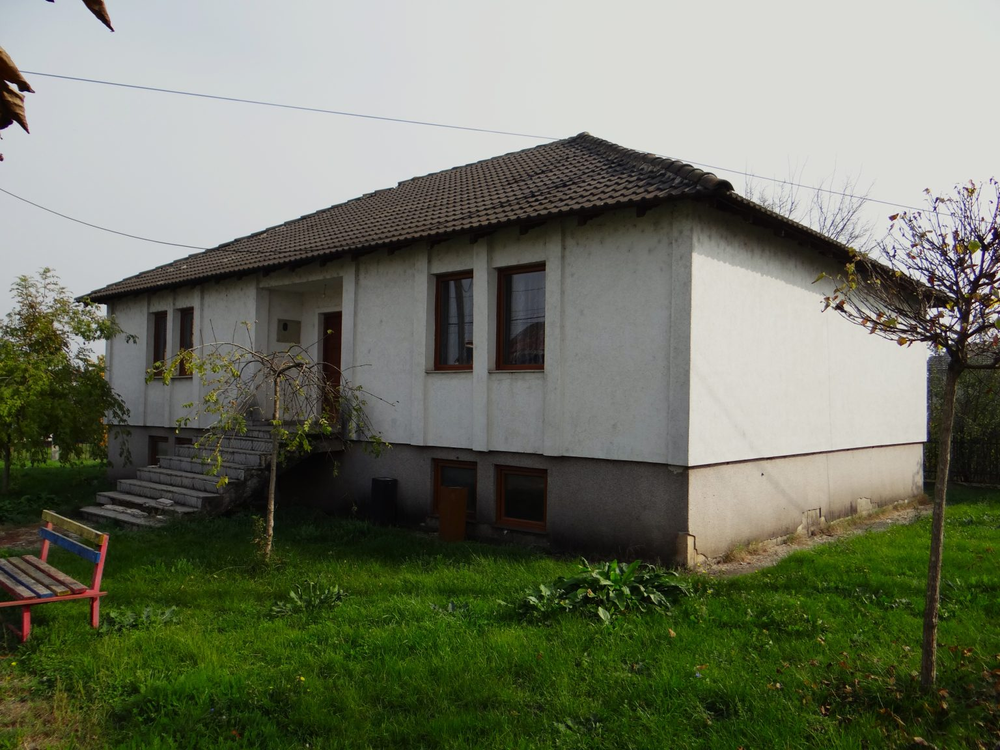
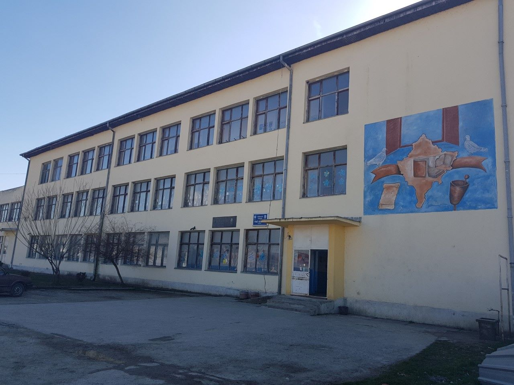

SHFMU "Halil Alidema" Pozharan
Historia
Garat
Stafi
Kalendari
Shkolla e parë shqipe në rajonin e Anamoravës u hap në fshatin Pozheran nga patrioti Islam Pira
Shiko historinë e shkollës "Islam Pira"


Tani përdoret si bibliotekë dhe po ashtu ka edhe artefakte të vjetra
Pastaj u ndërtua shkolla që u emërua pas patriotit dhe aktivistit "Halil Alidema"
Shiko historinë moderne të shkollës "Halil Alidema"
